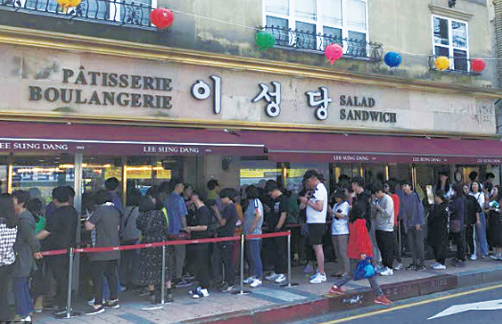
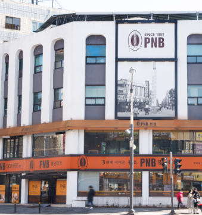

전북 맛집 리스트

빵과 과자 외에도 간단한 식사 대용 메뉴와 앉아서 먹을 수 있는 테이블이 준비되어 있습니다. 부드러운 팥 앙금을 넣은 '쌀단팥빵'과 사시사철 시원하게 즐길 수 있는 팥빙수가 인기입니다. 매 달 휴무일이 다르니 매장에 전화해 휴무일을 확인하고 방문하는 것이 좋습니다.
- 상호명
- 이성당
- 전화번호
- 063-445-2772
- 이용시간
- 점심:08:00 ~ 21:30
저녁:08:00 ~ 21:30
- 대표 메뉴
-
- 단팥빵
- 생크림앙금빵
- 주소
- 전라북도 군산시 중앙로1가 12-2
- 홈페이지
- 바로가기
전동성당 인근에 있는 분식점입니다. 들깻가루와 고춧가루, 김 가루를 뿌리고 계란을 풀어 넣은 걸쭉한 국물에 말아내는 칼국수가 이 집의 대표 메뉴입니다. 그 외에는 매콤새콤한 쫄면과 만두가 준비되어 있습니다.
- 상호명
- 베테랑 칼국수
- 전화번호
- 063-285-9898
- 이용시간
- 저녁:09:00 ~ 21:00
저녁:09:00 ~ 21:00
- 대표 메뉴
-
- 칼국수
- 쫄면
- 만두
- 콩국수
- 소바
- 주소
- 전라북도 전주시 완산구 교동 84-10
- 홈페이지
- 바로가기

1951년 개업한 이래 전주 내에서 운영되고 있는 풍년제과의 본점입니다. 생강, 땅콩 등의 재료를 넣고 만든 전병과 초콜릿을 사방에 묻히고 안에 생크림을 넣어서 만든 초코파이가 이 집의 대표 메뉴입니다. 그 외에도 다양한 빵과 케이크가 준비되어 있습니다
- 상호명
- PNB풍년제과본점
- 전화번호
- 063-285-6666
- 이용시간
- 저녁:08:00 ~ 22:3
- 대표 메뉴
-
- 초코파이
- 붓세
- 땅콩센베
- 깨센베
- 파래센베
- 주소
- 전라북도 전주시 완산구 경원동1가 40-5
- 홈페이지
- 바로가기